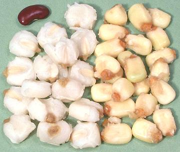
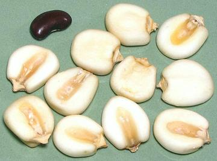

Nixtamal - Hominy

[Nixtamalized Corn (maize); Nixtamal (Spanish); Nixtamalli (Nahuatl); Hominy
(North America, from Powhatan tribe)]
Corn for tortillas, tamales, soups and similar uses is nixtamalized to
remove the hard outer skin from the kernels. This product is made by soaking
dried corn in a strong alkali, lye-water (US) or lime-water (Mexico), until
the outer hulls can be rubbed off. This process was first used about 3500
years ago in Guatemala, and has several nutritional advantages. It converts
niacin into a form more readily absorbed by the body, improves digestibility
of amino acids, and the lime treated version adds calcium to balance corn's
excess of phosphorus. This can be made from yellow or white corn.
In the photo, white corn nixtamal, prepared with lime, was canned, thus it
has been cooked to some extent. The fresh yellow nixtamal on the right has
not been cooked at all and is intended for inclusion in Menudo and similar
soups. Both white and yellow are also sold dried and broken (see "Buying"
below).
More on Corn.

Products subjected to nixtamalization are whole kernel corn, both
fresh and dried, grits (cracked corn), corn meal (masa harina) and
corn meal dough (masa). The photo to the left shows giant white
cacahuazintle corn that has been nixtalized before drying. In the photo
the kernels are dried and about 0.67 inches across. They will expand to
a larger size when cooked.
Buying:
Unfortunately, many "grits" and cornmeal products
are not properly labeled as to whether they're just cracked or ground, or
whether they have been nixtamalized first. There are other industrial
methods for removing the outer skin, so its having been removed is not
a good guide.
Some packages, particularly those in markets serving a Mexican
community, will indicate they have been treated with lime or lye.
These products are preferred for good nutrition.
Storing:
Canned and dried products can, with proper
storage conditions, be held for at least a year, though vitamin content
will slowly decline. Fresh products such as fresh nixtamalized
corn kernels and masa (corn flour dough) should be kept refrigerated
and used within just a few days.
Preparing from Dried:
Here we presume the kernels have
already been nixtamalized before drying. This how dried giant white
cacahuazintle corn is generally sold.
- Soak kernels overnight in water to cover well (it will expand).
- For soup, pinch off the brown tip to help it burst open while
cooking. Yes this is tedious but mindless, so you can do it while
watching your soaps (they haven't canceled all of them yet, have
they?).
- Cooking time should be about 3 hours, but it can stand a fair
amount longer.
Preparing from whole (skin on) kernels:
Here are the
instructions adapted from Diana Kenedy's "The Cuisines of Mexico" for
preparing from whole corn kernels. She presumes dried giant white
cacahuazintle corn, but it should work with other sizes as well. Start
two days ahead.
- Put 1 pound of whole corn kernels in a non-reactive pot.with water to
cover. Let it soak overnight.
- Change the water and bring it to a boil.
- Dilute about 1/2 Tablespoon of unslaked lime with a little cold water
and add it, through a strainer, to the pot.
- Bring back to a boil for about 10 minutes, then cover and let it soak
for another 30 minutes.
- Wash well in several changes of water,rubbing it between your hands
to remove the thin outer sheath.
- For soup, pinch off the brown tip to help it burst open while
cooking. Yes this is tedious but midless, so you can do it while
watching your soaps (they haven't canceled all of them yet, have
they?).
- Cooking time should be about 3 hours, but it can stand a fair
amount longer.
Health & Nutrition:
When corn (maize) became a common crop worldwide, particularly for the
poor, it brought with it a deadly disabling disease called Pellagra.
This niacin deficiency disease was particularly severe in Spain, northern
Italy and the US Southeast, and is still a problem in Africa, Indonesia
and China. It is characterized by terrible skin lesions, sensitivity to
sunlight, and a whole host of other symptoms, culminating in dementia
and death.
This disease had not affected the native populations of the
Americas because their corn was almost always nixtamalized before cooking.
This process converts the niacin in corn to a form the human body can
utilize.
gr hominz 111230 - www.clovegarden.com
©Andrew Grygus - agryg@clovegarden.com - Photos on this
page not otherwise credited are © cg1 -
Linking to and non-commercial use of this page permitted